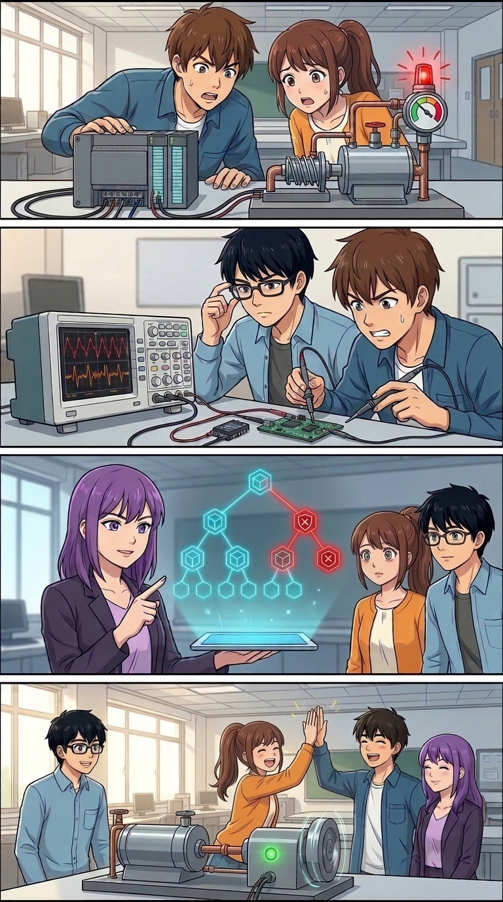
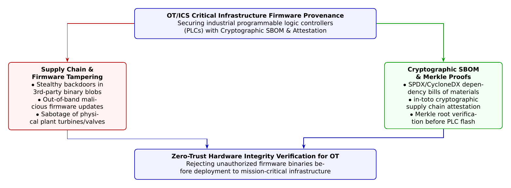

🎨 4コマ漫画挿絵（文字なし）
AI高解像度生成
▲ 【挿絵】青葉台高校 情報科学部＆帝都科学大学サイバーディフェンス・ラボでの実践シーン
📖 小説本文
### 1. 警告灯が明滅するミニチュアプラント
IASのサイバーフィジカル演習室には、産業用イーサネット（Modbus/TCP、PROFINET）で結ばれた実機スケールの水力発電タービンとパイプライン模擬プラントが設置されていた。
「悠真先輩、給水圧制御用のPLC（プログラマブルロジックコントローラ）の動作テスト中なんですが、圧力調整バルブの開閉デューティ比が徐々に異常値へドリフトしています！」 神崎蓮がPLCのI/Oモジュールにオシロスコープのプローブをあてながら叫んだ。
葵がPLCの制御ラダープログラム画面を指差す。 「ラダー記述には一切変更はないわ。でも、PLC内部のリアルタイムOS（RTOS）のメモリ消費量が異常に膨らんでいる……！」
悠真が厳しい視線でPLCのファームウェア更新履歴を確認した。 「昨日適用された、公式ベンダー名義の定期保守ファームウェアアップデート（v4.2.1）だ。パッケージの全体署名は一見正規のものに見える。だが、内部に組み込まれたサードパーティ製通信スタックのバイナリブロブ（Blob）の中に、巧妙な物理破壊工作ルーチンが潜んでいる可能性がある」
---
### 2. 見えない依存関係：OTサプライチェーンの闇
「産業制御機器のファームウェアは、何十社もの下請けやオープンソースのライブラリ、ハードウェア依存のプロプライエタリなドライバが複雑にリンクされて1つのモノリシックなバイナリイメージとしてビルドされます」 白石結衣が解説を始めた。
「最終ベンダーが署名鍵を持っていたとしても、そのビルド環境のCI/CDパイプラインや、海外サプライヤーから調達した中間コンポーネントが侵害されていれば、バックドアを検知することは極めて困難です。 ウクライナ停電攻撃（Industroyer）やStuxnetのように、特定の遠隔トリガーを受信した瞬間にバルブを急閉塞させてウォーターハンマー現象を起こし、タービンを物理的に破壊する攻撃が現代の重要インフラの最大の脅威となっています」
「バイナリ全体を眺めるだけじゃ、どこに何が混ざっているのか分からない……。だからこそ、部品の『原材料証明』が必要なのね」 葵が理解を示した。
---
### 3. 暗号学的SBOMとin-totoサプライチェーン証明
「そこで重要インフラ防衛の切り札となるのが、機械可読な部品表『SBOM（Software Bill of Materials）』と、サプライチェーン全体の改ざんを数学的に防ぐ『in-toto証明』だ」 悠真がディスプレイに暗号学的ハッシュツリー（Merkle Tree）を展開した。
1. **構成要素の完全列挙（CycloneDX / SPDX）**: ファームウェアに含まれるカーネル、ドライバ、暗号ライブラリ、ビルドツールのバージョンと、それぞれの暗号学的SHA-256ダイジェストを厳密にマッピングする。 2. **ビルド工程の署名チェーン（in-toto Attestation）**: 『誰がコミットし、どのクリーン環境でコンパイルされ、どのパッケージャがリンクしたか』という各工程のメタデータに対し、関係者のハードウェアセキュリティモジュール（HSM）による公開鍵暗号署名を数珠繋ぎに記録する。 3. **マークル木ルートの動的照合**: PLCにファームウェアをフラッシュ書き込みする直前、ブートローダ側のハードウェアルートオブトラスト（TPM/セキュアエレメント）がSBOMのマークルツリーを再計算し、正規のサプライチェーン証明書の暗号ハッシュと1ビットの齟齬もなく一致するかを自律判定する。
---
### 4. 守られた物理世界の平穏
蓮がベンダーから緊急入手したSBOMメタデータと、問題のファームウェアバイナリを突き合わせる監査スクリプトを実行した。
「CycloneDXツリー検証を開始……！ 発見しました！ ネットワークドライバ層に、正規のSBOMリストには記載のない未認証のELFオブジェクトコード `lib_modbus_proxy.so` が静的リンクされています！ ハッシュ不一致エラーを検出！」
悠真が頷いた。 「サプライチェーンのビルドサーバが侵害され、中間バイナリが差し替えられていたんだな。セキュアブートローダに汚染ファームウェアのブロックルールを投入するぞ」
直ちに正規のハッシュ証明書を持つクリーンなファームウェアが再フラッシュされた。 模擬プラントのタービンが滑らかな回転音を取り戻し、計器盤の圧力バルブステータスが美しい安定曲線を描く。
「サイバー空間のたった1ビットの改ざんが、現実世界の巨大な設備を狂わせてしまう。だからこそ、数理に裏打ちされたサプライチェーンの透明性が欠かせないのね」 葵が安堵の笑顔を浮かべた。 見えない糸で結ばれた産業社会の土台を、暗号と厳密な検証が力強く守り抜いていた。
📊 セキュリティ構造図解 (TikZ LuaLaTeX生成)
国家安全基準・工学図解
▲ 【技術構造図】IPAデジタルスキル標準・国際規格に準拠した仕組みのモデル化